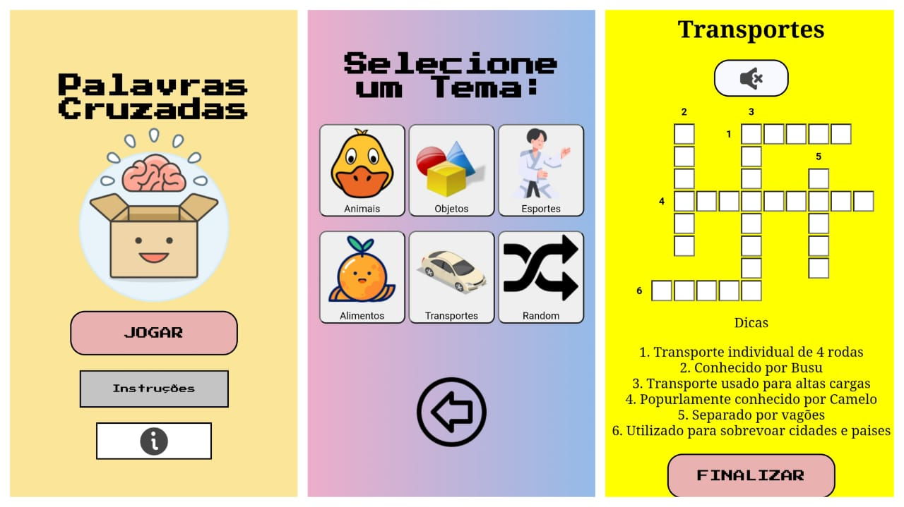

Palavras Cruzadas
O jogo de Palavras Cruzadas segue a mesma lógica dos jogos tradicionais do gênero, inclusive dos jogos disponíveis em revistas. Para jogar é bem simples, após clicar no botão de JOGAR, você será direcionado para esta página
Nela você tem a opção de escolher um tema dos 5 disponíveis para começar a jogar. E caso você seja uma pessoa indecisa, o jogo te dá a opção de usar o modo random. Dessa forma, o game escolherá por você. Não é incrível?
Suponhamos que você tenha sido direcionado para a página do tema Transportes. E ai, como eu faço para jogar? É bem fácil, confira na imagem
1- Cada coluna possui a númeração com a sua dica respectiva
2- A cada letra digitada corretamente o quadrado se torna verde, e caso errada, ela se torna vermelha.
3- Quando completo, você pode usar o botão finalizar para verificar se você bem sucedido, caso sim, será mostrada uma mensagem de Parabéns, caso esteja errada, uma mensagem de consolação, convidando-o para tentar novamente!.
4- Você também pode usar o botão finalizar mesmo com o jogo incompleto, e ele te mostrará as respostas... Mas eu sei que você é bastante inteligente, e não precisará usar desse artifício! Não é mesmo?
5- O game também possui uma música que é reproduzida ao pressionar o ícone de som
Além de poder jogar na versão web, o jogo também possui responsividade para os celulares mais modernos. Veja alguns screenshots
Está preparado para encarar o jogo Palavras Cruzadas e conseguir pensar fora da caixa?